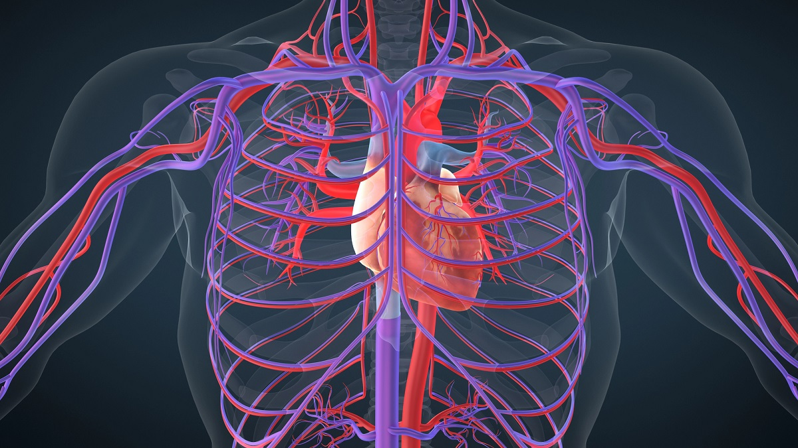

🫀 Sistema Circulatorio
¿Qué es?
El sistema nervioso controla y coordina nuestro cuerpo. Nos permite pensar, sentir, aprender y responder a lo que sucede a nuestro alrededor.
Está formado por diferentes partes que trabajan juntas para recibir información, procesarla y enviar respuestas a nuestro cuerpo.
